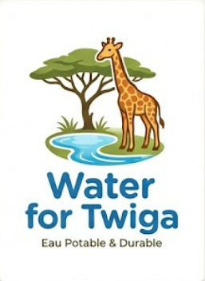

Nous réinventons l'accès à l'eau potable dans les territoires ruraux à ressources limitées. Une solution robuste, maintenable localement et respectueuse de l'environnement.
Découvrir le projetFace aux contraintes des milieux ruraux (comme en Tanzanie), nous concevons une technologie pensée pour la faisabilité, la désirabilité et la viabilité, tout en limitant les impacts environnementaux.
L'évaporation, les risques bactériologiques et les coûts de maintenance rendent l'accès à l'eau complexe dans les zones rurales isolées.
Un château d'eau souterrain innovant, alimenté par énergie solaire. Il permet de stocker l'eau en toute sécurité et de la redistribuer aux villages environnants.
Une réduction drastique de l'évaporation et des risques sanitaires, avec un système conçu pour être peu coûteux et réparable localement.
Une équipe pluridisciplinaire unie pour relever le défi de l'eau potable.